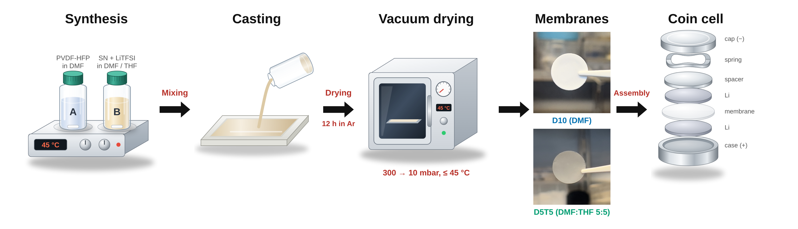
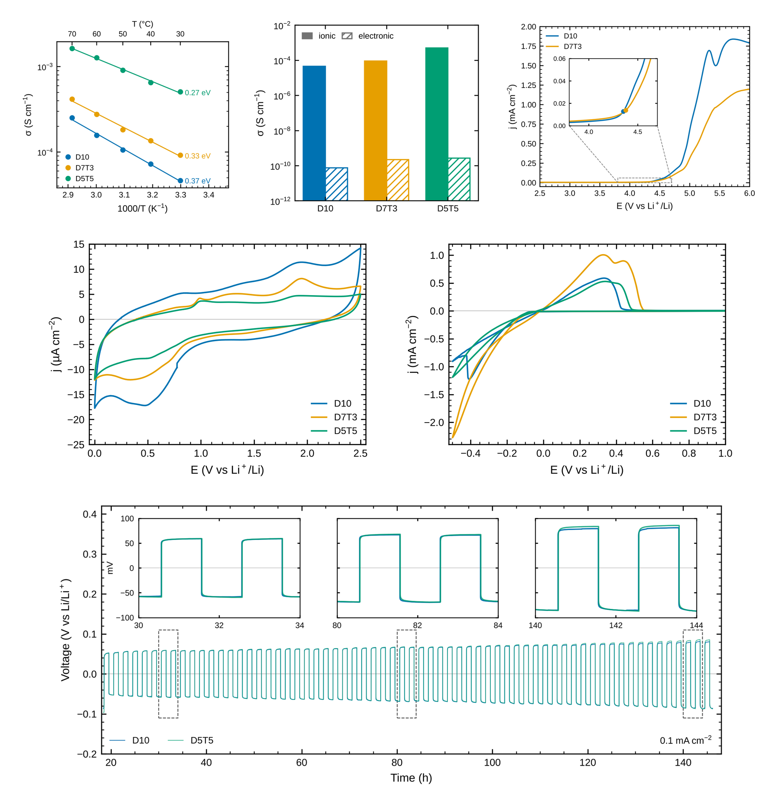
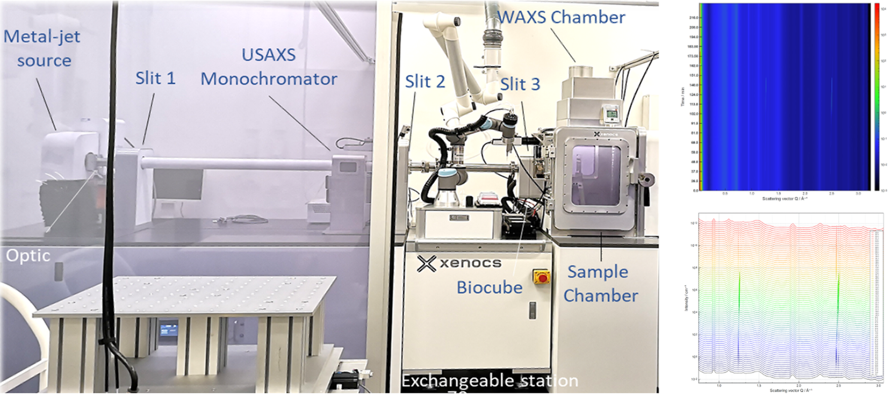

Co-Solvent Processing and Operando Structure of PVDF-HFP/Succinonitrile Polymer Electrolytes
Membrane Fabrication

PVDF-HFP is dissolved in DMF, and succinonitrile (SN) and LiTFSI in DMF or a DMF/THF mixture, both at 45 °C. The two solutions are mixed to give three casting co-solvents, DMF only (D10), DMF:THF 7:3 (D7T3) and DMF:THF 5:5 (D5T5), cast into PTFE molds, kept for 12 h in Ar and then dried under stepwise vacuum (300 → 15 mbar, ≤ 45 °C). The result is a free-standing polymer membrane that is punched into discs and assembled into coin cells.
The co-solvent is visible by eye: the DMF-cast D10 membrane forms an opaque white film, and the film becomes increasingly translucent as THF is added (D5T5).
Electrochemical Characterization

The ionic conductivity of SS|SS cells follows Arrhenius behaviour between 30 and 70 °C, with activation energies of 0.37 eV (D10), 0.33 eV (D7T3) and 0.27 eV (D5T5). DC polarization gives an electronic conductivity of about 10−10 S cm−1, five to six orders of magnitude below the ionic conductivity, so the membranes conduct lithium ions but block electrons. Linear sweep voltammetry (Li|SS) shows oxidation starting at about 4.35–4.38 V vs Li+/Li.
Cyclic voltammetry of Li|Cu cells between 0 and 2.5 V follows SEI formation on Cu, and between −0.5 and 2.5 V lithium plating and stripping, for all three membranes. Li|Li cells cycle at 0.1 mA cm−2 for 146 h with nearly identical overpotentials for D10 and D5T5.
Operando SAXS/WAXS

At the KWS-X laboratory SAXS/WAXS instrument, window coin cells are cycled in the X-ray beam to follow how the crystallinity and lamellar spacing of the membrane, and the lithium deposits, change during plating and stripping (in progress).
Methods
Electrolyte Preparation
- PVDF-HFP / LiTFSI / Succinonitrile
- DMF and DMF:THF Co-Solvent Casting
- Stepwise Vacuum Drying
- Coin-Cell and Window-Cell Assembly
Structural & Operando Characterization
- SAXS / WAXS
- Operando SAXS/WAXS
- SEM
- TGA / DSC
Electrochemical Analysis
- Impedance Spectroscopy (σ, σ(T))
- DC Polarization (Electronic Conductivity)
- Linear Sweep Voltammetry
- Li|Cu Cyclic Voltammetry
- Li|Li Cycling, Transference Number